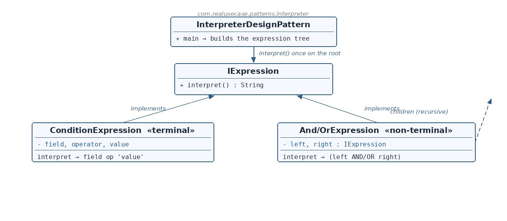

IExpression.java
☕ 4 min read · 🎬 Video walkthrough · 📊 UML diagram · 💻 Runnable code
⚡ In a nutshell — Given a language, define a class per grammar rule and an interpret() operation on each, so a sentence in the language becomes a tree of expression objects that evaluates itself recursively.
Given a language, define a class per grammar rule and an interpret() operation on each, so a sentence in the language becomes a tree of expression objects that evaluates itself recursively.
Terminal expressions are the leaves (atomic values); non-terminal expressions combine sub-expressions (AND, OR); the client interprets once on the root.
Dynamic filtering APIs accept user-defined boolean conditions — age > 18 AND (country = IN OR country = US) — that must be rendered into a target query language (SQL WHERE, Mongo filters). Production data layers build an expression tree from the user's filter and interpret it into the target dialect. This module models that: ConditionExpression is one atomic comparison; AndExpression/OrExpression combine any two sub-expressions; interpret() on the root yields the full SQL clause with correct parentheses.
IExpression is the grammar contract: interpret() returns this node's rendering.ConditionExpression is the terminal rule: field operator 'value' — the recursion's base case.AndExpression / OrExpression are the non-terminal rules: each holds left and right sub-expressions typed to the interface, so operands may be conditions or nested combinators.interpret() once; recursion renders it inside-out.
Reading the diagram: one interface, two kinds of implementers — terminals (leaves) and non-terminals whose left/right children are themselves IExpression (the dashed recursive arrow). Grammar becomes class structure.
IExpression — Abstract expression — the interpret() contract.ConditionExpression — Terminal — one atomic field op 'value' comparison.AndExpression / OrExpression — Non-terminals — combine two sub-expressions with a boolean operator.InterpreterDesignPattern — Client — builds the tree, interprets the root.public interface IExpression {
String interpret();
}
ConditionExpression.java — the terminal rulepublic class ConditionExpression implements IExpression {
private final String field;
private final String operator;
private final String value;
public ConditionExpression(String field, String operator, String value) { ... }
@Override
public String interpret() {
return field + " " + operator + " '" + value + "'";
}
}
age > '18'. No sub-expressions: this is where recursion bottoms out.AndExpression.java — a non-terminal rulepublic class AndExpression implements IExpression {
private final IExpression left;
private final IExpression right;
public AndExpression(IExpression left, IExpression right) { ... }
@Override
public String interpret() {
return "(" + left.interpret() + " AND " + right.interpret() + ")";
}
}
left and right are typed IExpression — an operand may be a condition or another combinator; this is the grammar's recursion expressed in the type system.interpret() recursively interprets both children and joins them with AND inside parentheses — precedence stays correct at any nesting depth. OrExpression is identical with OR.InterpreterDesignPattern.java — the clientIExpression expression = new AndExpression(
new ConditionExpression("age", ">", "18"),
new OrExpression(new ConditionExpression("country", "=", "IN"),
new ConditionExpression("country", "=", "US")));
System.out.println(expression.interpret());
interpret() on the root renders the whole clause inside-out.NotExpression, an InExpression) are new classes — the grammar grows without touching existing rules, and each rule's rendering logic lives in exactly one place.$ java -cp target/classes com.realusecase.patterns.InterpreterDesignPattern
(age > '18' AND (country = 'IN' OR country = 'US'))
Grammar as classes, sentence as a tree — call interpret once and it renders itself.
👏 Found this useful? Give it a few claps so more developers discover it, and follow for the whole series — every article ships with a UML diagram, runnable code, a narrated video, and a companion PDF. Happy building! 🚀